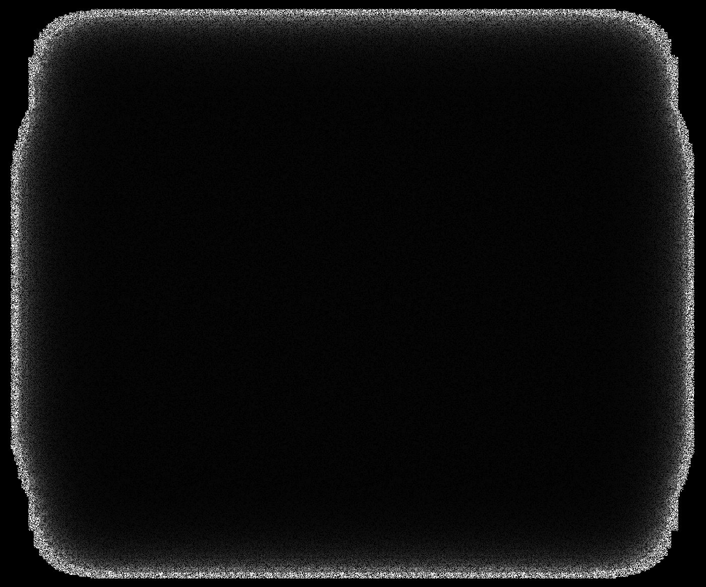
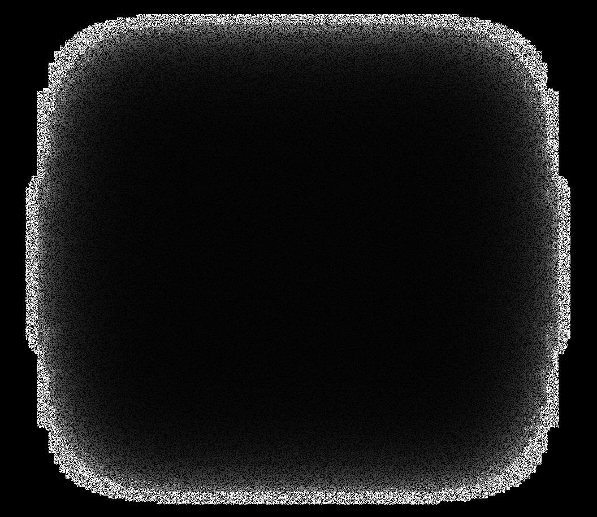

Aplicación operativa en Google AppSheet
Proyecto profesional
Proyecto profesional
El proyecto consistió en revisar y mejorar una aplicación operativa construida en Google AppSheet, utilizada por el equipo para organizar información, ejecutar tareas frecuentes y sostener procesos internos.



La aplicación ya cumplía una función importante, pero necesitaba una experiencia más ordenada para que el equipo pudiera trabajar con menos fricción y más claridad.
Algunos flujos tenían pasos innecesarios, la información podía sentirse dispersa y ciertas tareas frecuentes requerían más esfuerzo del necesario.
Se reorganizaron flujos, pantallas y criterios de uso para que la aplicación fuera más directa, entendible y útil en las tareas principales.
Se logró una experiencia más clara y funcional, reduciendo fricción en tareas frecuentes y mejorando la organización de la información dentro de la aplicación.
Tipo: Aplicación operativa interna
Estado: Implementado / en uso interno
Tecnología: Google AppSheet
Enfoque: Mejorar la interacción de usuarios